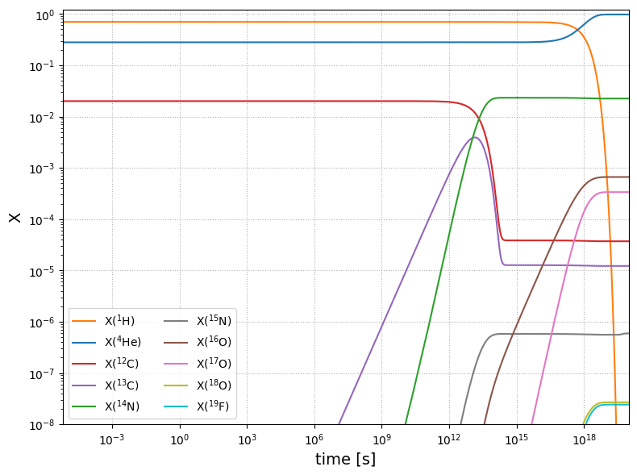
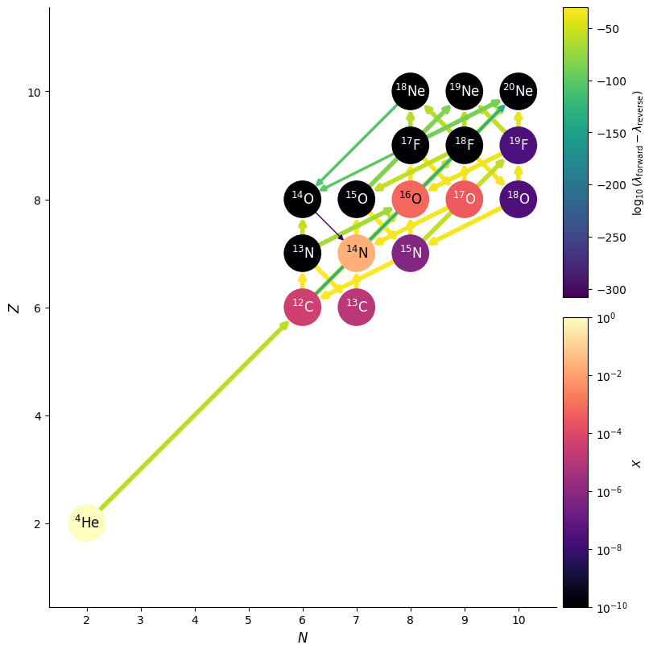

CNO Burning Example#
We can redo the same integration but using pynucastro to manage the integration. This will allow us to make pretty pictures.
import numpy as np
import matplotlib.pyplot as plt
import pynucastro as pyna
net = pyna.network_helper(["p", "he4",
"c12", "c13",
"n13", "n14", "n15",
"o14", "o15", "o16", "o17", "o18",
"f17", "f18", "f19",
"ne18", "ne19", "ne20"], tabular_ordering=["ffn", "oda"])
We’ll setup the same initial conditions
rho = 150
T = 1.5e7
comp = pyna.Composition(net.unique_nuclei)
comp.X[pyna.Nucleus("p")] = 0.7
comp.X[pyna.Nucleus("he4")] = 0.28
comp.X[pyna.Nucleus("c12")] = 0.02
Y0 = comp.get_molar_array()
Now we can integrate
tmax = 1.e20
sol = net.integrate_network(tmax, rho, T, Y0, atol=1.e-8)
/opt/hostedtoolcache/Python/3.14.5/x64/lib/python3.14/site-packages/pynucastro/rates/derived_rate.py:125: UserWarning: C12 partition function is not supported by tables: set log_pf = 0.0 by default
warnings.warn(UserWarning(f'{nuc} partition function is not supported by tables: set log_pf = 0.0 by default'))
/opt/hostedtoolcache/Python/3.14.5/x64/lib/python3.14/site-packages/pynucastro/rates/derived_rate.py:125: UserWarning: N13 partition function is not supported by tables: set log_pf = 0.0 by default
warnings.warn(UserWarning(f'{nuc} partition function is not supported by tables: set log_pf = 0.0 by default'))
/opt/hostedtoolcache/Python/3.14.5/x64/lib/python3.14/site-packages/pynucastro/rates/derived_rate.py:125: UserWarning: C13 partition function is not supported by tables: set log_pf = 0.0 by default
warnings.warn(UserWarning(f'{nuc} partition function is not supported by tables: set log_pf = 0.0 by default'))
/opt/hostedtoolcache/Python/3.14.5/x64/lib/python3.14/site-packages/pynucastro/rates/derived_rate.py:125: UserWarning: N14 partition function is not supported by tables: set log_pf = 0.0 by default
warnings.warn(UserWarning(f'{nuc} partition function is not supported by tables: set log_pf = 0.0 by default'))
/opt/hostedtoolcache/Python/3.14.5/x64/lib/python3.14/site-packages/pynucastro/rates/derived_rate.py:125: UserWarning: N15 partition function is not supported by tables: set log_pf = 0.0 by default
warnings.warn(UserWarning(f'{nuc} partition function is not supported by tables: set log_pf = 0.0 by default'))
sol.success
True
Now we can plot the mass fractions.
fig = sol.plot_evolution(ymin=1.e-8)
/opt/hostedtoolcache/Python/3.14.5/x64/lib/python3.14/site-packages/pynucastro/networks/python_network.py:412: UserWarning: Attempt to set non-positive xlim on a log-scaled axis will be ignored.
ax.set_xlim(tmin, tmax)

We can also look at the flow through the network
X_final = sol.X[:, -1]
comp_final = pyna.Composition(net.unique_nuclei)
comp_final.set_array(X_final)
fig = net.plot(rho, T, comp_final,
size=(800, 800),
use_net_rate=True, color_nodes_by_abundance=True)
/opt/hostedtoolcache/Python/3.14.5/x64/lib/python3.14/site-packages/pynucastro/rates/derived_rate.py:125: UserWarning: C12 partition function is not supported by tables: set log_pf = 0.0 by default
warnings.warn(UserWarning(f'{nuc} partition function is not supported by tables: set log_pf = 0.0 by default'))
/opt/hostedtoolcache/Python/3.14.5/x64/lib/python3.14/site-packages/pynucastro/rates/derived_rate.py:125: UserWarning: N13 partition function is not supported by tables: set log_pf = 0.0 by default
warnings.warn(UserWarning(f'{nuc} partition function is not supported by tables: set log_pf = 0.0 by default'))
/opt/hostedtoolcache/Python/3.14.5/x64/lib/python3.14/site-packages/pynucastro/rates/derived_rate.py:125: UserWarning: C13 partition function is not supported by tables: set log_pf = 0.0 by default
warnings.warn(UserWarning(f'{nuc} partition function is not supported by tables: set log_pf = 0.0 by default'))
/opt/hostedtoolcache/Python/3.14.5/x64/lib/python3.14/site-packages/pynucastro/rates/derived_rate.py:125: UserWarning: N14 partition function is not supported by tables: set log_pf = 0.0 by default
warnings.warn(UserWarning(f'{nuc} partition function is not supported by tables: set log_pf = 0.0 by default'))
/opt/hostedtoolcache/Python/3.14.5/x64/lib/python3.14/site-packages/pynucastro/rates/derived_rate.py:125: UserWarning: N15 partition function is not supported by tables: set log_pf = 0.0 by default
warnings.warn(UserWarning(f'{nuc} partition function is not supported by tables: set log_pf = 0.0 by default'))
